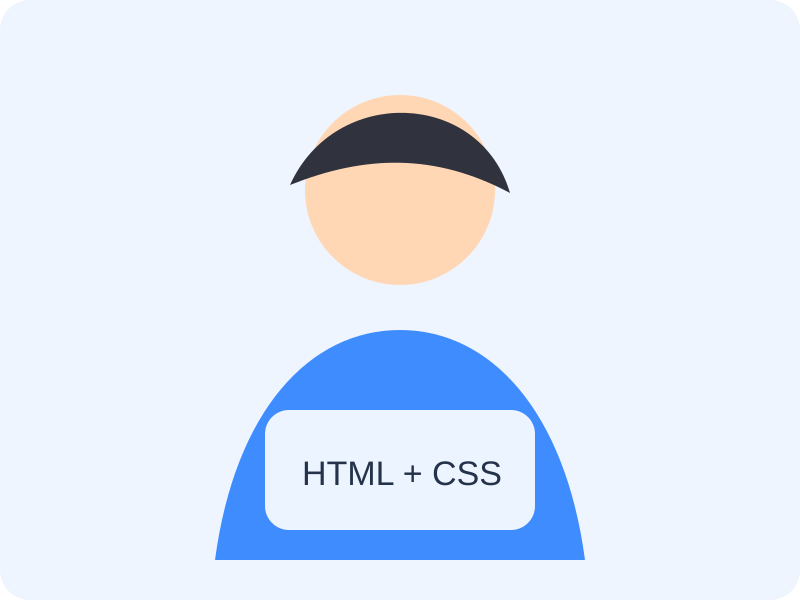

О проекте
TravelNow — учебный сайт про городские маршруты и небольшие путешествия. Здесь собраны контакты, карта и статистика.
Телефон+373 777 12 345
Почтаtravelnow@example.com
Адресг. Тирасполь, ул. 25 Октября, 128
ГрафикПн-Пт, 09:00–18:00
Наши достижения
0
маршрутов
0
клиентов
0
городов
0
% отзывов
Мы на карте
Точка указана для примера, карту можно заменить своей из конструктора Яндекс.Карт.
Отзывы
Быстро нашли офис по карте.
— Марина
— Марина
Статистика оживает, страница смотрится не скучно.
— Влад
— Влад
На телефоне блоки стали в одну колонку.
— Оля
— Оля